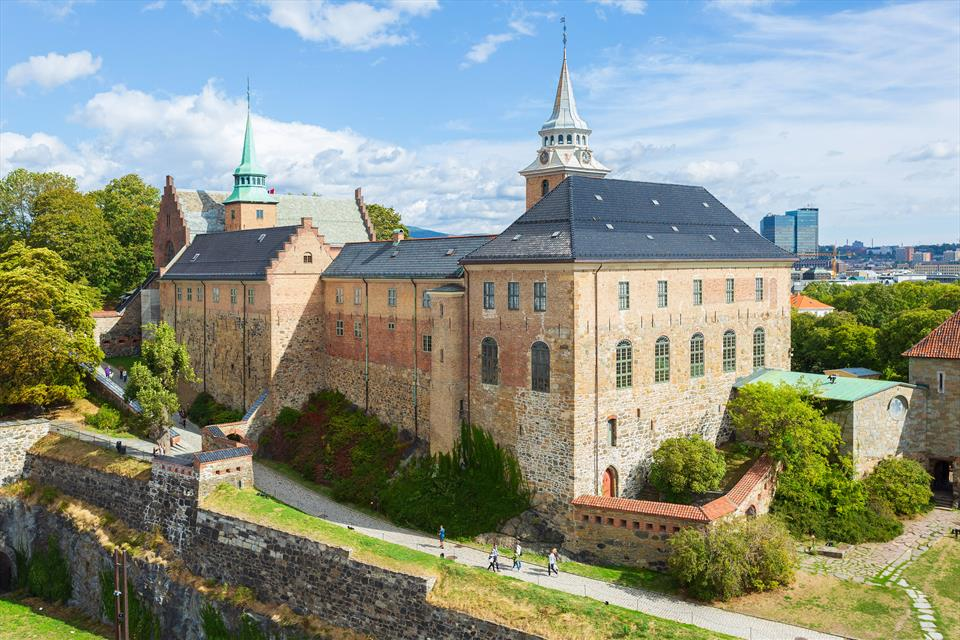
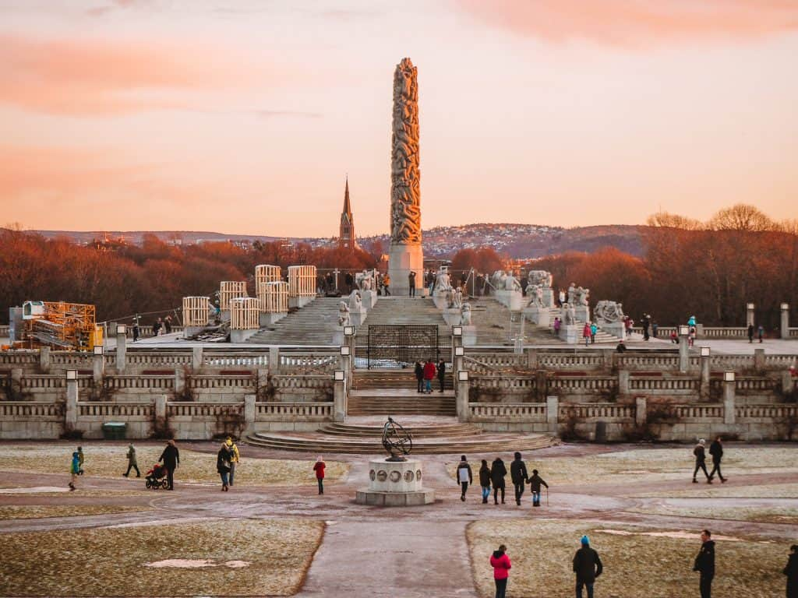
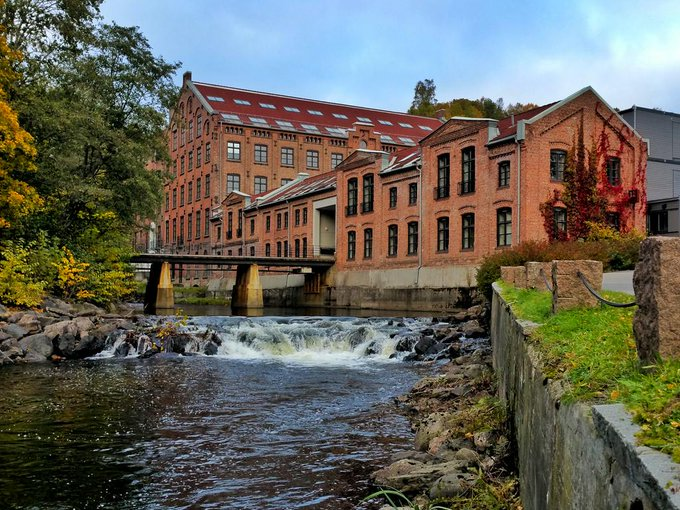

History of Oslo
Since the Middle Ages Oslo has gone through great changes, even the name of the town has been changed a few times, before it became the city it is today.
Oslo, Kristiania or Christiania?
One can easily be confused by the capital's different names through the years. The town was originally called Oslo. In the Middle Ages it was located on the east side of the Bjørvika inlet. After a dramatic fire in 1624, king Christian IV decided that the town be rebuilt in the area below the Akershus Fortress, and he changed its name to Christiania. From 1877 the name was spelled Kristiania, and in 1925 it was changed back to the original name, Oslo.
Medieval Oslo
Oslo's history begins in the Middle Ages; the first town-like settlement probably appeared around the year 1000 AD. The medieval town of Oslo was located below the Ekeberg hills, on the east side of the Bjørvika inlet. Around the year 1300 AD Oslo had about 3000 inhabitants. The town was the residence of King Haakon V (1299-1319) who commenced the building of what is today known as the Akershus Fortress.In the part of town called Gamlebyen (the Old Town) you find remains of medieval Oslo in the form of ruins, building parts and cultural layers. Here you also find Oslo Ladegård, with a medieval hall in the cellar. Closeby lies the memorial park with ruins of the St. Hallvard cathedral (from the 12th century) and the St. Olav convent.
The renaissance town
From 1536 Norway was in a union with Denmark. After a dramatic fire in 1624, the Danish King Christian IV decided that the town be rebuilt below Akersus, so the fortress could function as a defence for the town. The town was named Christiania, after the king himself.
This part of Oslo's centre between the Akershus Fortress and Oslo Cathedral, Øvre Vollgate and Skippergata is today known as Kvadraturen ("the quadrature") because of the rectangular street pattern of Christian IV’s renaissance town. Several well-preserved buildings from the 17th century can be seen here. In Kvadraturen you can see the building that housed Oslo's first town hall, and the city's oldest restaurant, Café Engebret.
A capital is built
As a consequence of the Napoleonic Wars, Denmark in 1814 had to cede the territory of Norway to the Swedish king, Karl Johan. This year Norway got its own constitution, on 17 May, and Christiania got its official status as the capital of Norway. King Karl Johan initiated the building of the Royal Palace in 1825. The palace was completed in 1848 under King Oscar I. In 1866 the Parliament building in Karl Johans gate was finished.
The industrial era started along the river Akerselva around 1850. In the years between 1850 and 1900 the population of Kristiania increased from about 30,000 to 230,000 mainly due to an influx of workers from rural areas.
Historical Oslo
As most older cities Oslo has gone through big character changes as a result of fires and redevelopment. Most of the original town is lost, but in some neighbourhoods you can still get a feel of the past.
The more than 700-year-old Akershus Fortress is an important cultural monument. Here the memories of World War II also come out strongly. Many Norwegian patriots were executed here, and Akershus was surrendered to the Norwegian resistance movement in the last hours of the war. After the war Vidkun Quisling was held in prison here. Thus it is natural that Norway's Resistance Museum is located at Akershus.
In Frogner Park you find the Oslo City Museum. If you want to increase your knowledge about the history of Norway's capital, this is the place to go. The museum presents models, objects and photos that together paint a comprehensive image of city development, commercial and cultural activities, street life etc. through Oslo's long history.
The river Akerselva was the cradle of industrialism in Norway. A walk along the river is a pleasant experience and offers interesting meetings with living cultural memories. Cascades and old wooden houses provide a contrast to the enormous industrial buildings.